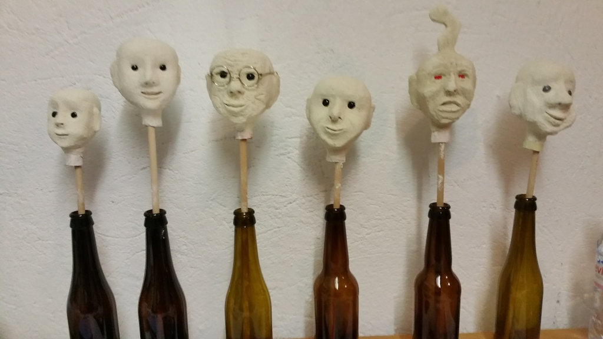
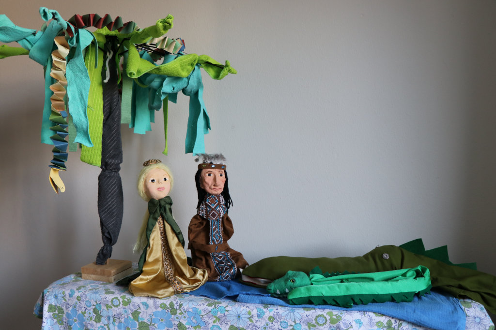

Kurse
Zur Zeit keine Kurse. Daten in Planung.

Home | Was ist Figurenspieltherapie? | Für wen eignet sich die Figurenspieltherapie? | Rahmenbedingungen | Kurse | Über mich | Kontakt
Die Figurenspieltherapie ist eine psychotherapeutisch orientierte, kreative Spiel- und Kunsttherapieform, die sich vor allem an Kinder und Jugendliche richtet. Durch das Spiel mit den Figuren können eigene Lösungen für schwierige Situationen gefunden und im geschützten Rahmen ausprobiert werden.
Der Goldvogel kann als Symbol für Kostbarkeit, Freiheit, lebensspendende Kraft und Neuanfang gedeutet werden.
Ich möchte mich gerne mit Ihnen und Ihrem Kind auf den Weg machen, um Neues zu entdecken, Altes zu hinterfragen und innere Schätze sichtbar zu machen.
Nun wünsche ich Ihnen viel Spass beim Stöbern auf meiner Homepage.
Herzlich
Andrea Reali-Ehrler
Wer nach aussen schaut, träumt. Wer nach innen blickt, erwacht.C.G. Jung
Die Figurenspieltherapie ist eine ganzheitliche, kreative Spiel- und Kunsttherapieform, die sich an den Grundlagen der Entwicklungspsychologie von C. G. Jung orientiert.
Kinder haben oft Mühe, ihr Befinden und ihre Gefühle in Worten auszudrücken. Im symbolischen Spiel können sie mit ihren innersten Wünschen, Sehnsüchten, Gedanken, aber auch Ängsten und Befürchtungen in Kontakt kommen. Aus einer Vielfalt von Hand- und Tierfiguren sucht das Kind diejenigen aus, die es gerade braucht. Jede Figur verkörpert symbolisch einen inneren Anteil des Kindes. Lösungen für Probleme können im Spiel mit den Figuren und Requisiten ausprobiert und später in das reale Leben integriert werden. Die Figurenspieltherapeutin als Mitspielerin und Beobachterin versucht das Kind mit gezielten, sanften Interventionen bei seiner Lösungssuche zu unterstützen.
Zusätzlich können nach einer einfachen Methode eigene Figuren gestaltet werden, die den Therapieprozess positiv unterstützen. Weitere Inhalte der Therapie können kreative Tätigkeiten wie Gestalten mit verschiedenen Materialien, Geschichten und Märchen erzählen, Malen, Zeichnen oder das Spiel mit Sand sein.
Regelmässige Gespräche mit den Eltern oder auch mit anderen Bezugs- und Fachpersonen begleiten die Therapie.
Die Figurenspieltherapie eignet sich für Kinder und Jugendliche ab 4 Jahren. In angepasster Form kann sie auch bei Erwachsenen angewendet werden.
Sie wirkt unterstützend bei:
Diese Aufstellung ist nicht vollständig und nennt nur die häufigsten Gründe für den Besuch einer Figurenspieltherapie.
Therapiedauer
Die Therapiestunden finden regelmässig, in der Regel wöchentlich, statt. Eine Sitzung dauert 60 Minuten. Die Dauer der Therapie kann nicht im Voraus bestimmt werden. Jedes Kind lässt sich im eigenen Tempo auf den Therapieprozess ein.
Kosten
| Schnupperstunde | CHF | 80.- | |
| 60 Minuten Figurenspieltherapie | CHF | 80.- | (Ab 2023 CHF 120 .-) |
| Elterngespräche (pro Stunde) | CHF | 80.- | (Ab 2023 CHF 120 .-) |
| Verfassen von Berichten (pro Stunde Zeitaufwand) | CHF | 80.- |
Zur Zeit keine Kurse. Daten in Planung.
Andrea Reali-Ehrler
Schon als Kind hat mich das Figurenspiel fasziniert. Ich liebte es das Kasperlitheater oder die Marionetten-Bühne zu besuchen. Vorerst begab ich mich beruflich aber auf andere Wege. Nach vielen Jahren in der Mütter –und Väterberatung entdeckte ich das Figurenspiel neu und absolvierte mit Begeisterung die Ausbildung zur Figurenspieltherapeutin an der Höheren Fachschule in Olten.
Mir ist es sehr wichtig, ganzheitlich zu arbeiten. Gespräche mit den Eltern und je nach Situation mit involvierten Fachpersonen sind für mich ein Teil des Fundaments für der Therapie. Ich konzentriere mich als Figurenspieltherapeutin nicht nur auf Symptome und Probleme des Kindes, sondern vor allem auch auf die Stärkung seiner Ressourcen. Jeder Mensch trägt viel Kostbares in sich und ist sich dessen nicht immer bewusst.
Für mich ist es immer wieder beeindruckend, wie durch das Spiel mit den Figuren ein Kind ausdrücken kann, wie es sich im Moment fühlt und was von seinem Unterbewusstsein auf die Spielbühne drängt. Ich freue mich auf Sie und ihr Kind. Nehmen Sie unverbindlich mit mir Kontakt auf, wenn Sie an der Figurenspieltherapie interessiert sind. Allfällige Fragen kläre ich gerne mit Ihnen.
Zur Qualitätssicherung besuche ich regelmässig die Supervision.
Goldvogel
Praxis für Figurenspieltherapie
Tramstrasse 62
8050 Zürich
+41 79 329 50 50
andrea.realiehrler@gmail.com